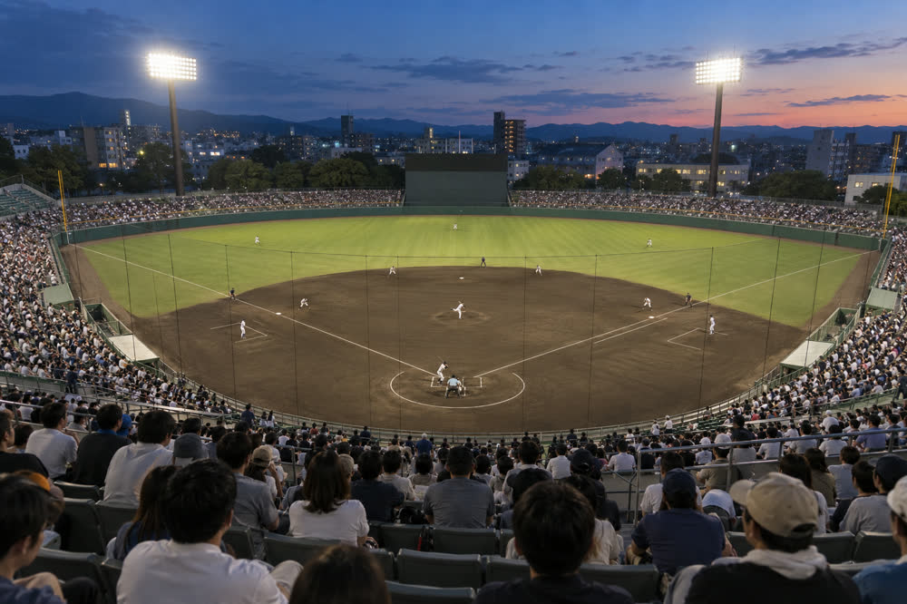

Kuroda homer sends Seagulls into the final, first place two wins away
Daichi Kuroda's two-run home run in the first inning and two more runs in the seventh beat the Moonview Wild Boars 5–3 and clinched the Springvale Seagulls a place in the Shiokaze League final. Sunday's game has been postponed because of the typhoon.

Update, 11:20, Sunday 4 October: The Shiokaze League has postponed Sunday's 13:00 game between the Seagulls and the Wild Boars at Springvale Bayside Stadium because of Typhoon No. 21. It will now be played on Tuesday 6 October at 18:00. Tickets for Sunday's game are valid on Tuesday, or can be refunded at the stadium box office until 11 October.
The Springvale Seagulls are in the Shiokaze League final. Daichi Kuroda hit a two-run home run in the first inning, Takumi Hoshino struck out seven in six innings, and the Seagulls beat the Moonview Wild Boars 5–3 at Springvale Bayside Stadium on Saturday night to make certain of a top-two finish with three games to play.
The Aogiri Comets, who won 4–1 away at the Nishiura Tritons, have also clinched a place, so the final from 17 October will be the Seagulls against the Comets. What remains to be settled is who finishes first: the first-placed team hosts games one, two and, if needed, five of the best-of-five series. The Seagulls lead the Comets by two games, and their magic number for first place is two.
| # | Team | G | W | L | D | Pct | GB | Last 10 |
|---|---|---|---|---|---|---|---|---|
| 1 | Springvale Seagulls | 69 | 41 | 25 | 3 | .621 | — | 7-2-1 |
| 2 | Aogiri Comets | 69 | 39 | 27 | 3 | .591 | 2.0 | 6-4-0 |
| 3 | Moonview Wild Boars | 69 | 34 | 33 | 2 | .507 | 7.5 | 4-6-0 |
| 4 | Shiomi Red Crabs | 69 | 33 | 34 | 2 | .493 | 8.5 | 5-5-0 |
| 5 | Nishiura Tritons | 69 | 29 | 38 | 2 | .433 | 12.5 | 3-6-1 |
| 6 | Kamisato Fireflies | 71 | 26 | 45 | 0 | .366 | 17.5 | 3-7-0 |
72 games per team. The top two meet in the best-of-five final from 17 October.
Kuroda sets the tone
The Seagulls wasted no time. Sota Imai singled to left with one out in the first, and Kuroda drove the next pitch he saw from Wild Boars starter Kosuke Ishiyama over the right-field fence. It was his 24th home run of the season, extending his lead at the top of the league, and his 81st run batted in.
I was looking for a fastball after he missed with two sliders. With a crowd like this, on a night like this, you want to give them something to shout about early.
Daichi Kuroda
The Wild Boars, who needed a win to keep alive their slim hopes of catching the Comets, cut the lead to 2–1 in the second on a sacrifice fly, and went ahead 3–2 in the fifth when their cleanup hitter Ryota Hayashi doubled into the left-centre gap with two men on.
Hoshino, who had allowed only two runs in his previous 20 innings, settled down after that. He retired the last five batters he faced and left after six innings with six hits and three runs against him, seven strikeouts and two walks.
Two in the seventh
The Seagulls tied the game in the sixth. Yuto Sakai, who had two hits, doubled down the right-field line and scored on Shun Takagi's single up the middle.
In the seventh, Kenji Arai drew a walk from Ishiyama and came home on Kaito Mori's single to centre to put the Seagulls back in front. After Ishiyama was replaced by Taro Nishi, Ren Matsuoka greeted the reliever with a single to right that brought Mori home for a 5–3 lead.
Yamato Fujii pitched two scoreless innings, and closer Nao Kawabata gave up a two-out single in the ninth before ending the game on a fly ball to centre for his 19th save. Hoshino improved to 11–4.
We said in spring that this team would play in October. Tonight is for the fans who have been coming here since we were last in the table. But we want first place, and we want to start the final at home.
Masaru Kitagawa, Seagulls manager
| Team | 1 | 2 | 3 | 4 | 5 | 6 | 7 | 8 | 9 | R | H | E |
|---|---|---|---|---|---|---|---|---|---|---|---|---|
| Moonview Wild Boars | 0 | 1 | 0 | 0 | 2 | 0 | 0 | 0 | 0 | 3 | 8 | 1 |
| Springvale Seagulls | 2 | 0 | 0 | 0 | 0 | 1 | 2 | 0 | x | 5 | 9 | 0 |
Attendance: 3,412. Time: 2 h 58 min. HR: Kuroda (24th, 1st inning, 1 on).
| Player | Pos | AB | R | H | RBI |
|---|---|---|---|---|---|
| Sota Imai | CF | 4 | 1 | 2 | 0 |
| Kaito Mori | SS | 4 | 1 | 1 | 1 |
| Daichi Kuroda | 1B | 3 | 1 | 1 | 2 |
| Ren Matsuoka | DH | 4 | 0 | 1 | 1 |
| Haruto Endo | 3B | 4 | 0 | 0 | 0 |
| Yuto Sakai | RF | 3 | 1 | 2 | 0 |
| Shun Takagi | C | 3 | 0 | 1 | 1 |
| Kenji Arai | LF | 3 | 1 | 0 | 0 |
| Taiga Okubo | 2B | 3 | 0 | 1 | 0 |
| Totals | 31 | 5 | 9 | 5 |
| Pitcher | IP | H | R | ER | BB | SO | Decision |
|---|---|---|---|---|---|---|---|
| Wild Boars: Kosuke Ishiyama | 6⅓ | 8 | 5 | 5 | 2 | 4 | L (7–9) |
| Wild Boars: Taro Nishi | 1⅔ | 1 | 0 | 0 | 1 | 2 | |
| Seagulls: Takumi Hoshino | 6 | 6 | 3 | 3 | 2 | 7 | W (11–4) |
| Seagulls: Yamato Fujii | 2 | 1 | 0 | 0 | 0 | 2 | |
| Seagulls: Nao Kawabata | 1 | 1 | 0 | 0 | 0 | 1 | S (19) |
Three games left
The Seagulls' remaining games are Tuesday's rearranged home game against the Wild Boars at 18:00, a home game against the Shiomi Red Crabs on Saturday 10 October, which has been brought forward to 13:00 so that fans can get to the Lantern Festival in the evening, and the final regular-season game away at the Comets on Sunday 11 October.
Two Seagulls wins, two Comets defeats, or one of each, will secure first place. If the Comets take all three of their games and the Seagulls win only one, the two teams would finish level, and first place would go to the Comets on their head-to-head record this season.
Saturday's crowd of 3,412 was the largest at Bayside Stadium this season. The Seagulls are averaging 2,870 spectators at home in 2026, up 9% on last year. The club said tickets for the first two games of the final will go on sale at the stadium and online on Monday 12 October at 10:00, priced from ¥1,500 for adults and ¥500 for children.

Comments 4
BaysideBleacher
Was there tonight. When Kuroda's ball left the park the whole stand was on its feet. Best night at Bayside in years.
seagull_since2015
Remember when we lost 50 games? Final! Now beat the Comets on the 11th and take the home advantage.
Mina.K
Good that they postponed Sunday. Tuesday at 18:00 is tough for those of us who work, though.
TsukimiBoarsFan
Fair play, Seagulls. Hayashi deserved better tonight. See you on Tuesday.